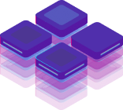

Deploy real world applications
Qovery Engine empowers you to deploy complex applications, such as a backend, a frontend, and a database in a very simple way.
Servers, networking, security, all is done by the Engine for you.
SEE MORE
Resiliency is key
Qovery Engine knows when something goes wrong on the deployment of your applications. Qovery Engine is built with resiliency in mind.
A transactional engine inspired by what is provided into ACID databases has been developed at the heart of the product to rollback on a consistent and working application version when something goes wrong.
SEE MORE
On top of the best tools
Qovery Engine does not reinvent the wheel. It takes advantage of the best tools in the Cloud industry, such as Kubernetes, Terraform, and Helm to manage the deployment of the infrastructure and your applications.
Servers, networking, security, all is done by the Engine for you.
SEE MORE
Extensible
Qovery Engine is built to be highly extensible. Adding the support of a Cloud provider or a Continuous Integration platform is as simple as implementing a simple programmatic interface.
SEE MORE